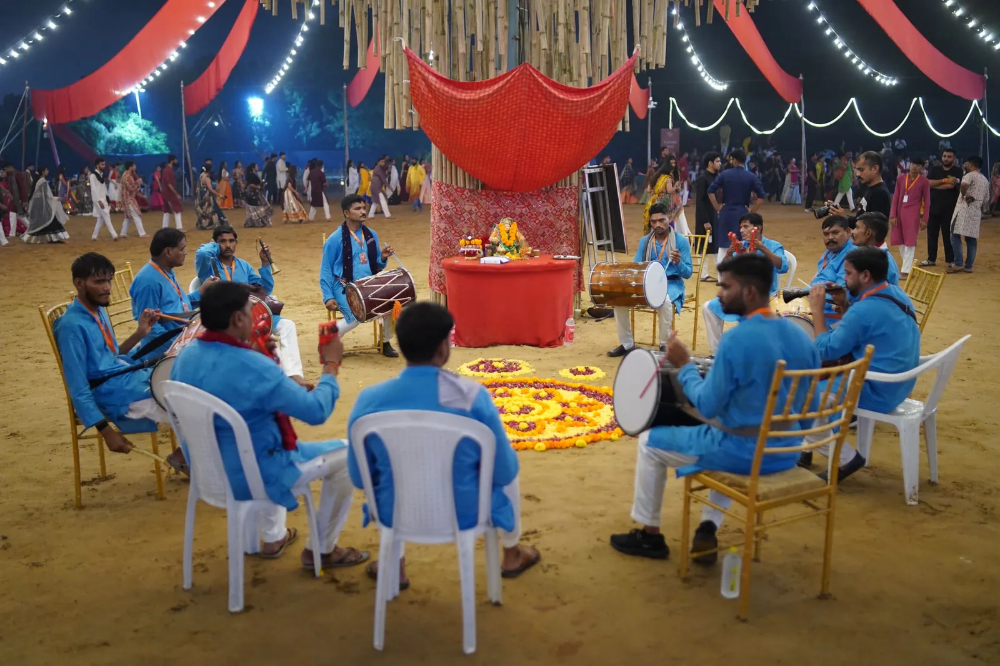
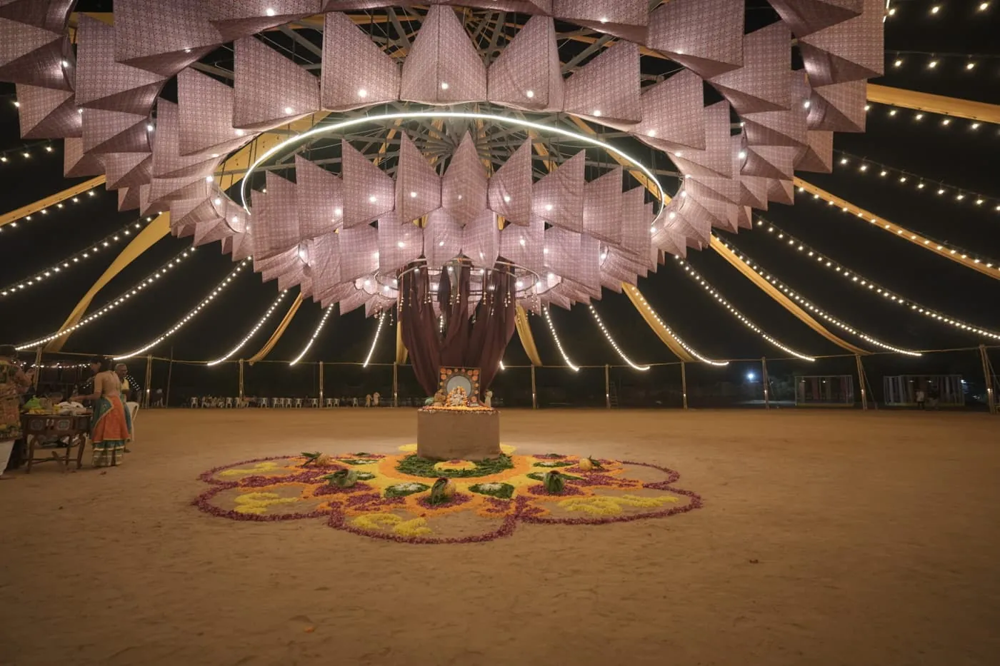
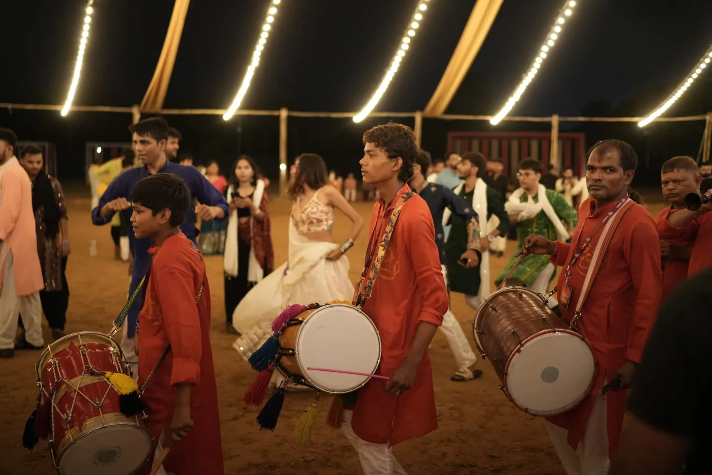
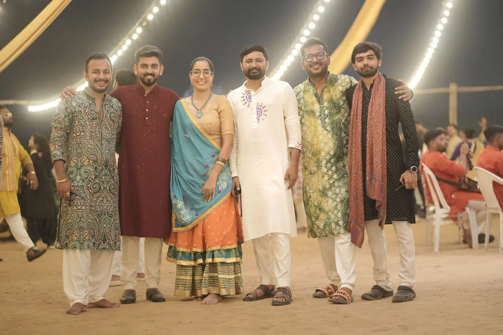
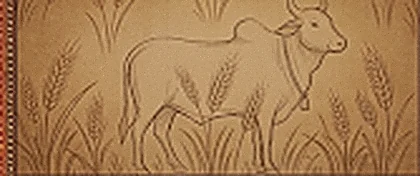
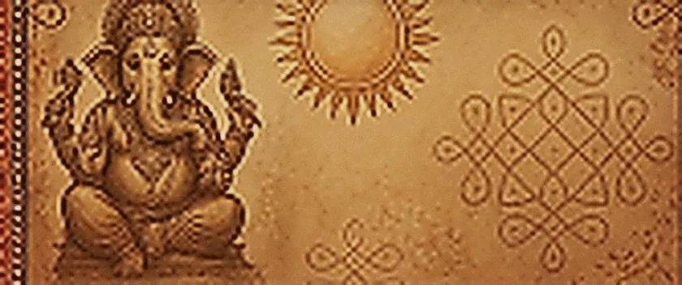
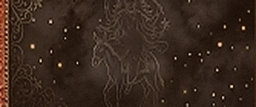
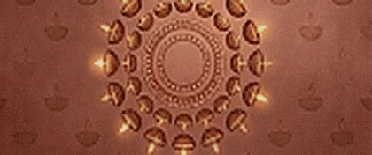

Divi Garba 2026
સાંજથી પરોઢ
Ten nights. One circle.
Where tradition comes alive.
Garba, dhol, devotion and togetherness — ten nights of music, movement and celebration, all coming together in one timeless circle.
11 — 20 Oct 2026↓︎
Our Divi GlowsDivi Garba 2026
- 11 — 20 Oct 2026
- Ten nights
- Master Farm
- Vaishnodevi Circle
- Shehnai · dhol
- From 8:00 PM · Last entry 2:00 AM
Your nights at Divi
Plan your visit
Until the first beat
Choose your nights
11–20 October 2026 · From 8:00 PM IST
Choose a night to plan with your friends.
Planning a night does not reserve entry. Use Book ticket to check passes with the ticket provider.
What should I wear?
Dress Code — Traditional attire encouraged; must respect cultural values.
Can I re-enter?
Timing & Entry — Gates open at 8:00 PM; last entry at 2:00 AM. No re-entry allowed.
What do I need for entry?
Entry & Passes — Valid event pass required. Non-transferable. QR codes valid for single scan only.
How does a Couple Pass work?
Couple Pass — One male and one female are mandatory on a Couple Pass. 2 male or 2 female are not allowed on couple entry.
Are passes refundable?
Refunds — Passes are non-refundable; rescheduling policy applies for cancellations.
Divi Garba 2026
Our Divi Glows
Where tradition comes alive.

One step. One circle. One energy.

Rhythm
Driving thousands of people together.

Everyone you know is here
Old friends, new memories and a circle that keeps growing.
The story of Divi
Nine forms,
ten nights.
Divi runs ten nights. Nine of them carry a form of Durga, one each, the way Navratri has always counted them — and the tenth is Dussehra, the night the other nine have been building toward. Read left to right, or read all ten in full ↗︎

Night 111 Oct
Shailaputri
Daughter of the mountain. The first night sets the ground under everything that follows.
Night 212 Oct
Brahmacharini
The long penance — moon, water pot, and a patience the other eight are built on.
Night 313 Oct
Chandraghanta
The bell that warns and the tiger that answers. The night the circle finds its nerve.

Night 414 Oct
Kushmanda
Her smile lit the sun. The warmth the ground keeps until morning.
Night 515 Oct
Skandamata
The mother who makes a shelter. Half the night is somewhere safe to stand.
Night 616 Oct
Katyayani
The warrior on the lion. The step turns hard and fast and everybody knows it.

Night 717 Oct
Kalaratri
The darkest form, and the kindest — the night that takes fear off you.

Night 818 Oct
Mahagauri
Washed white again. Lamps in a ring and the ground at its most still.
Night 919 Oct
Siddhidatri
The lotus opens. Every power granted, and the ninth circle closes.
Night 1020 Oct
Vijayadashami
The ninth circle closes and the tenth opens. Dussehra — the victory night, and the loudest the ground gets all year.
The nights
Ten nights,
as they happen.
Click a night to view it full screen.
11 — 20 October 2026
Master Farm, B/s Sardardham, Vaishnodevi Circle
Ten nights.
One circle.
Onward 8:00 PM
The Chakra turns
until the sun returns.